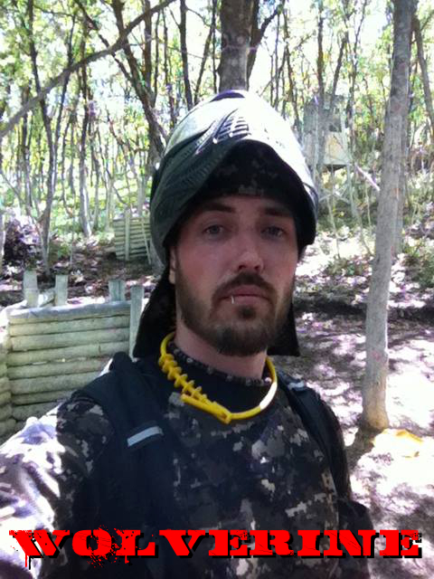

Jeff Jackman

Salt Lake City, UT

5

Etek 3 LT, Tiberius 9.1 Ranger
Proto Switch FS
Dye Rotor
Guerrilla Air 68/4500

Snowboarding, Digital & Traditional Arts & Animation, Videogame
Making, Film making, Hiking, Camping, Dirt Biking, Fishing, BATTLEFIELD 4, XBOX,
Youtuber: 4orkast@youtube.com

I was mentored by Brady "B-Dazl" Coleman when I first got hooked on the
sport. When he learned my last name was Jackman, he immediately called me
WOLVERINE! (since Hugh Jackman plays Wolverine in the movies). I didn't initially want
the name because I was set on my gamertag (FORKAST on xbox 10+ years). So I fought
him on it for a while. The more I resisted, the more he would yell my name out when I got
to the field. "WOLVERINE!" -He'd yell in front of everyone. I eventually caved and the
name stuck.

I'm a "Film & Media Art" Major at the U of U. Set to graduate in the spring of '15. I love
making videos and short films. I am also studying 2D & 3D animation and may find a
career in video game making. I love the outdoors. I'm most definitely a dog person. When
I met FTP I was instantly a fan. I have to give a big shout out to Brady Coleman for
helping to shape me into the baller I am today. WHO ARE WE? FTP!